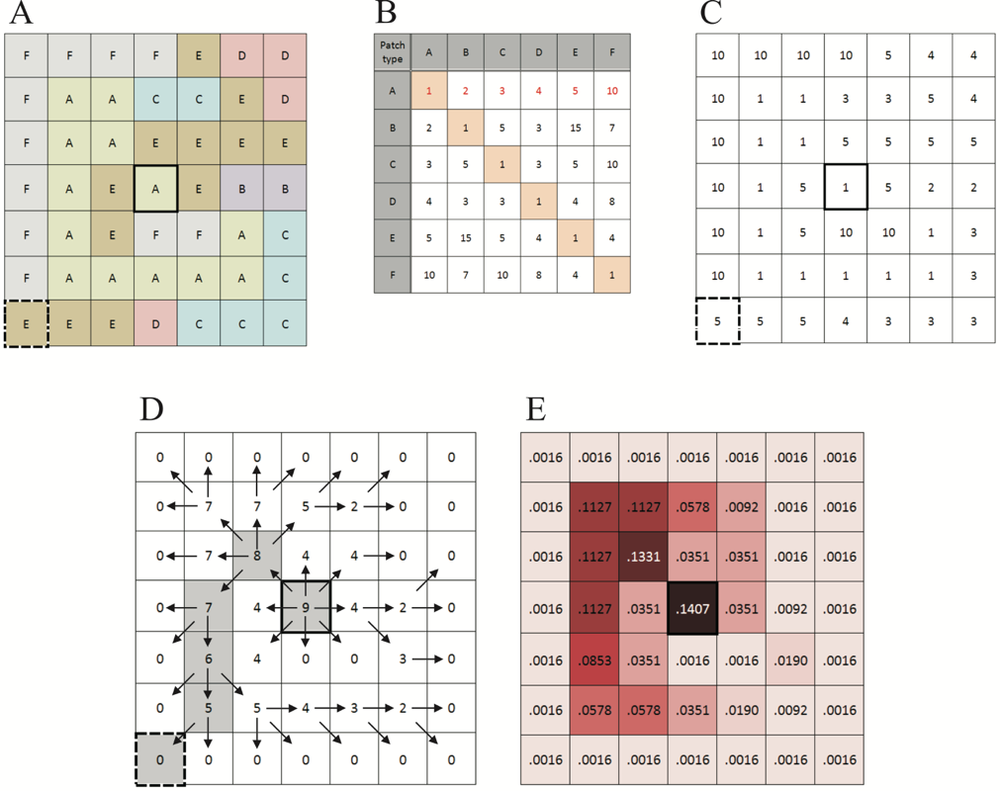

1 Resistant kernel analyses
Compton et al. (2007)
“The resistant-kernel estimator is a hybrid between two existing approaches, the kernel estimator and least-cost paths with resistant surfaces. The kernel estimator (Silverman 1986; Worton 1989) is a density estimator commonly used for home range analysis in radiotelemetry studies. Given two-dimensional data (e.g., x, y points) it produces a three-dimensional surface representing an estimate of the underlying probability distribution by summing across bivariate curves centered on each sampled point. Resistant surfaces are being increasingly used in landscape ecology, replacing the binary habitat/nonhabitat classifications of island biogeography and classic metapopulation models with a more nuanced approach that represents variation in habitat quality (Ricketts 2001). A resistance value is typically assigned to each cover type in a land-cover map, representing a divisor of the expected dispersal or migration distance of animals moving through that cover type. Least-cost path analysis is then used to find the shortest functional distance between two points. This least-cost path approach can be extended to a multidirectional approach that measures the functional distance from a focal cell to every other cell in the landscape within a maximum dispersal or migration distance. Such a least-cost “kernel” is a surface that can be scaled to represent the probability of an individual dispersing from the focal cell arriving at any other point in the landscape. The resistant kernel estimator is calculated by creating a least-cost kernel for each focal cell that represents a source of dispersers (i.e., each vernal pool) and summing across all kernels at each cell (Fig. 1).”
“We summed the cell values of each pool’s kernel across forested and vernal-pool cells (rather than sum across all kernels at each cell, as in the kernel estimator) to give the proportion of upland habitat available relative to a kernel in intact optimal habitat (i.e., a pool surrounded by continuous forest). This quantity ranged from near 0 (for a pool with no accessible upland habitat) to 1 (for a pool with optimal upland habitat). This approach differs from simply counting the amount of forest in a circle around each pool in two ways. First, for each pool, forested cells were scaled by the distance from the pool to account for the distribution of expected migratory distances. Second, this approach accounted for differential survival and willingness to cross different land-cover types such as golf courses or roads.”
We modeled neighborhood connectivity by applying a resistant kernel (scaled to sum to 1, thus representing the probability of a single individual dispersing to each point surrounding the pool) to each pool and summing across kernels, creating a cumulative kernel surface (as in a standard kernel estimator). The value at the center of each kernel was subtracted from each pool so that the model represented the contribution of dispersers from neighboring pools. We sampled this surface at each pool to yield the neighborhood connectivity metric.
1.1 Other references
1.1.1 Diniz et al. (2020)
All connectivity models described here, except some IBDMs, are based on a landscape raster representation commonly known as resistance surface.
in some situations a continuous and more synoptic view of connectivity may be required (Cushman and Landguth 2012). This can be achieved through the approach known as resistant kernel, which arose from the union of two well-known methods, the dispersal kernel estimator and the LC path modeling (Compton et al. 2007). To apply the resistant kernel analysis is necessary to have (1) a resistance surface depicting the cost imposed on the species movement by landscape elements; (2) the source locations representing the origin points of dispersers; (3) a dispersal function by which the cumulative cost from sources will be converted into expected densities of dispersing individuals; and (4) a dispersal threshold representing an intrinsic condition of the species that limits its movement (Compton et al. 2007; Cushman and Landguth 2012; Rudnick et al. 2012). The resistant kernel modeling works as follows (Compton et al. 2007; Cushman and Landguth 2012). First, the LC path starting at a source cell and ending at each cell surrounding it is identified using the resistance surface. Then, the accumulated cost of each path is stored in the respective cell creating a map of movement cost. The model computes the optimal path only for cells adjacent to the source cell where the accumulate cost is less than the cost distance dispersal threshold. Next, the accumulated-cost value maintained in each cell is converted into an estimate of relative density using the defined dispersal function. The expected density of dispersing individuals at the source is the highest and it is down-weighted for the neighboring cells by the cumulative cost up to the dispersal threshold. The way in which the reduction of the density occurs as the cumulative cost increases (e.g., linearly, exponentially or following a normal curve) is determined by the dispersal function. All the LC dispersal kernels are made individually for each source cell and summed to yield a synoptic, all- directional dispersal map (i.e., a surface with the total expected density of dispersers or the expected movement rates at each pixel of the landscape, which is the most effective algorithmic way of representing the spatial incidence function of dispersal).
Resistant kernels and IBDMs do not require a priori identification of destinations (e.g., Cushman and Landguth 2012; Allen et al. 2016). The most important conceptual difference between the LC path and resistant kernel approach is that in the path model individuals have a priori destinations and the model finds optimal routes between them while in the resistant kernel approach organisms disperse optimally based on cost away from source points but without a priori destinations, with probability of final location a function of cumulative cost from the source point (Compton et al. 2007; Etherington 2016). Specifically, the resistant kernel approach simulates least-cost dispersal from source points, reflecting the density and distribution of the population, to all locations in the landscape accessible to those individuals, based on the resistance of the surrounding landscape and the dispersal ability of the species (Compton et al. 2007; Cushman and Landguth 2012). As noted above, this creates a biologically realistic estimate of the spatial incidence function of dispersal, in terms of the probability or density of movements through each and every location in the landscape (Compton et al. 2007; Cushman and Landguth 2012).
1.1.2 McGarigal et al. (2018)
Considering multiple additional suboptimal routes or smoothing the LC paths using a probability density function have been used to deal with the unrealistic assumption of a single optimal path with a 1-pixel width (Pinto and Keitt 2009; Landguth et al. 2012; Ribeiro et al. 2017). For example, Cushman et al. (2013) implemented factorial least-cost corridor analysis which couples computation of all pair-wise paths in a system of nodes with resistant kernel buffering to provide a spatially synoptic and biologically realistic model of connectivity across a continuously distributed population in a
Appendix C. (verbatim) Detailed description of the resistant kernel algorithm used to define the ecological neighborhood for the connectedness (resiliency) metric. The resistant kernel is derived as follows (Fig. C1): Step 1.−The first step is to derive a resistance (or cost) surface for the neighborhood surrounding a focal cell, and there are two different approaches that can be used to create a resistance surface for use in a resistant kernel: 1. In the first case, the resistance surface is derived from a single categorical raster (e.g., land cover types; Fig. C1-A). In this case, we assign a cost to each land cover type. Note, the cost matrix (Fig. C1-B) represents the relative cost of moving through each patch type from an initial patch type, and it need not be symmetrical. For example, the cost matrix in figure C1-B is read as follows. The row heading represents the “from” patch type, and the column heading represents the “to” patch type. Thus, the first row of the matrix is interpreted as: from a focal cell of patch type A, the cost of moving through a cell of the same patch type (A) is one (the minimum cost); the cost of moving through a cell of patch type B is two (i.e., two times more costly than moving through a cell of patch type A); the cost of moving through a cell of patch type C is three (i.e., three times more costly than A), and so on. The costs are user-defined and can take on any values, as long as the minimum cost (and the cost of moving through a cell of the same patch type) is one. Thus, the diagonal elements of the matrix are always set to one, but the off-diagonals can take on any value greater than one. For a focal cell, we generate a resistance (or cost) surface by assigning the relevant cost to each cell based on the cost matrix (Fig. C1-C). For example, the focal cell in figure C1-C is of patch type A, so the costs assigned to each cell are based on the information in the first row of the cost matrix corresponding to “from” patch type A. Note, the resistance surface will change depending on the patch type of the focal cell. 2. In the second case, the resistance surface is derived from one or more continuous rasters (e.g., representing continuous ecological variables). In this case, we compute the Euclidean distance in ecological space between the focal cell and each neighboring cell. Note, Euclidean distance is easily computed for a single continuous variable as the absolute value of the difference between cell values, but this is easily extended to multivariate ecological distance for two or more variables. In this case, the variables are standardized (e.g., range rescaled 0-1, z-scores) and (optionally) weighted before computing the Euclidean distance. Next, we convert the (weighted) Euclidean distance to cost based on a user-specified transformation function. For example, we might range-rescale Euclidean distance by stretching or shrinking it to fit the desired cost range (e.g., 1-20). Alternatively, we might apply a nonlinear transformation such as a logistic function or power function. Thus, for a focal cell, we generate a resistance surface by assigning the transformed Euclidean distance to each neighboring cell. Note, as in the first case described above, the resistance surface will change depending the ecological setting of the focal cell. It is important to recognize the dynamic nature of the resistance surface approach described above, whereby the resistance surface changes depending the land cover type (case 1) or ecological setting (case 2) of the focal cell and its unique ecological neighborhood. Thus, each focal cell has a unique resistance surface. Step 2.−The second step is to assign to the focal cell a “bank account” based on the width of the user-specified standard kernel, and spread outward to adjacent cells iteratively, depleting the bank account at each step by the minimum cost of spreading to each cell (Fig. C1-D). For illustrative purposes, suppose that the raster cell size in figure C1-A is 10 m and we wish to create a resistant Gaussian kernel with a bandwidth h (equal to one standard deviation) of 30 m (three cells). Further, suppose that we want the Gaussian kernel to extend outward to no more three standard deviations (3h; 90 m or nine cells), since beyond that distance the landscape has only a trivial influence on the focal cell. Given these parameters, we start with a bank account of nine, since at the minimum cost of one of moving through a single cell, the kernel will extend outward nine cells. Starting with a bank account of nine in the focal cell, if we move to an adjacent cell of patch type F (cost of 10, Fig. C1-B), we reduce the bank account by ten and assign a balance of zero (since negative accounts are not allowed) to that cell. This means that we use up our entire bank account if we attempt to move through a cell of patch type F and can spread no further from that cell. On the other hand, if we move to an adjacent cell of patch type A (cost of one; Fig. C1-B), we reduce the bank account by one and assign a balance of eight to that cell. For simplicity in this illustration, diagonal paths are treated the same as orthogonal paths; in the model diagonal costs are multiplied by the square root of 2 (=1.4). Note, an artefact of weighting the diagonal neighbors in this manner and using a cellular automata approach (in which distance is measured in a zig-zag like manner instead of straight line) is an octagonal shaped standard kernel. This process is repeated iteratively, spreading outward in turn from each visited cell, each time finding the least cost of getting to that cell from any of its neighbors, until the balance reaches zero. This produces a “functional proximity” surface representing the proximity of every cell to the focal cell within a threshold proximity distance. Note the difference between functional proximity and least-cost path distance. Functional proximity decreases as you move away from the focal cell, whereas least-cost path distance increases − they are complementary measures of distance. In addition, note that the proximity surface has embedded within it the least-cost path to each cell. Step 3.−The last step is to convert the cell values in the proximity surface to weights based on the specified kernel function. First, transform the proximity values into the number of units from the focal cell by subtracting the proximity value from the initial bank account, such that in our example, a proximity value of nine (focal cell) is equal to zero and a proximity value of zero (cells at the periphery of the kernel) is equal to nine. Second, based on the specified kernel function, compute the probability density for the value derived above. For example, for a Gaussian kernel, compute the probability density for each value based on a normal distribution with a mean of zero and standard deviation of three. Third, divide these values by a constant equal to the sum of the values above for a standard kernel (or resistant kernel in a non-resistant landscape). Note, the constant above ensures that the volume of a standard kernel (or resistant kernel in a non-resistant landscape) is equal to one. The resulting surface is the resistant kernel and its volume is always less than or equal to one (Fig. C1-E).
https://static-content.springer.com/esm/art%3A10.1007%2Fs10980-018-0653-9/MediaObjects/10980_2018_653_MOESM1_ESM.docx
2 Regional connectivity analyses using circuit theory
- Circuitscape/Omniscape (Landau et al. 2021), application for circuit theory (B. H. McRae 2006)
- PNW Reports: one for local connectivity (Buttrick et al. 2015), one for regional connectivity using Omniscape (B. McRae et al. 2016)